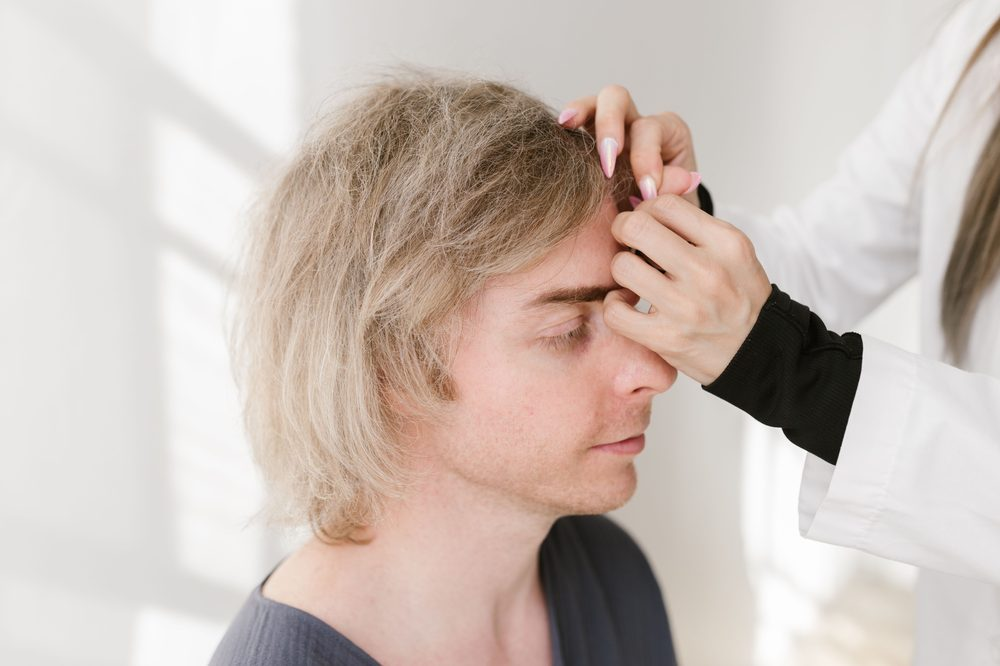

Пересадка волос в Турции
Пакеты пересадки волос методом FUE в Стамбуле «всё включено» — операция, отель, трансфер и послеоперационное сопровождение — мы всё организуем для вас.
Готовы начать? Поговорите со специалистом уже сегодня.
Связаться с нами
Стамбул — одно из ведущих мировых направлений для пересадки волос методом FUE: здесь работают опытные медицинские команды и предлагаются удобные пакеты услуг «всё включено». Ниже вы найдёте три наших самых популярных пакета пересадки волос. Все процедуры проводятся под медицинским наблюдением по методике FUE (экстракция фолликулярных единиц).
Пакеты пересадки волос
Пакет VIP
- До операции: электрокардиограмма, анализы крови, личный переводчик
- Операция по пересадке волос: максимальное количество графтов, выполняется врачом
- После операции: набор для ухода за волосами (6 месяцев), поролоновая подушка для сидения (10 дней), подушка для шеи, лекарства, послеоперационный уход
- Дополнительное лечение: PRP-терапия (2 сеанса), лазерная терапия волос (2 сеанса), терапия стволовыми клетками (1 сеанс)
- Проживание и трансфер: 4 ночи в 5-звёздочном отеле, VIP-трансфер (аэропорт — отель — больница)
Пакет Gold
- До операции: электрокардиограмма, анализы крови, личный переводчик
- Операция по пересадке волос: максимальное количество графтов, выполняется врачом
- После операции: набор для ухода за волосами (2 месяца), поролоновая подушка для сидения (10 дней), подушка для шеи, лекарства, послеоперационный уход
- Дополнительное лечение: PRP-терапия (2 сеанса), лазерная терапия волос (1 сеанс)
- Проживание и трансфер: 3 ночи проживания, VIP-трансфер (аэропорт — отель — больница)
Стандартный пакет
- До операции: электрокардиограмма, анализы крови, личный переводчик
- Операция по пересадке волос: максимальное количество графтов, выполняется врачом
- После операции: поролоновая подушка для сидения (10 дней), подушка для шеи, лекарства, послеоперационный уход
- Дополнительное лечение: PRP-терапия (2 сеанса)
- Проживание и трансфер: 3 ночи проживания, VIP-трансфер (аэропорт — отель — больница)
Цены ориентировочные и подтверждаются после вашей бесплатной консультации. Во всех пакетах используется методика FUE.
Почему стоит выбрать Турцию?
- Больницы с международной аккредитацией
- Опытные узкопрофильные хирурги и медицинские команды
- Значительная экономия по сравнению с Великобританией, ЕС и США
- Прямые рейсы из большинства крупных городов Европы и Ближнего Востока
Зачем работать с независимым консультантом?
В отличие от клиники, продвигающей собственные услуги, Artun Healthcare Consultancy работает независимо и в ваших интересах. Под руководством Tahsin Güney — с 35-летним опытом в сфере медицинского страхования и частных больниц Турции, включая руководящие должности в Турецком учреждении социального обеспечения (SGK) и Acıbadem Healthcare Group — мы подбираем для вас подходящую больницу и специалиста, а не направляем вас в интересах одной-единственной клиники.
Ваш путь лечения
- 1Бесплатная консультация
- 2Индивидуальный план и расчёт стоимости
- 3Организация поездки
- 4Процедура
- 5Последующее наблюдение
Часто задаваемые вопросы
Какая методика используется при пересадке волос в Турции?
Во всех наших пакетах пересадки волос используется методика FUE (экстракция фолликулярных единиц), которую выполняет врач.
Сколько графтов мне потребуется?
Количество графтов зависит от вашего индивидуального случая и определяется во время бесплатной консультации до поездки.
Что входит в стоимость пакета?
В каждый пакет входят предоперационные обследования, сама процедура, средства послеоперационного ухода и VIP-трансфер аэропорт — отель — больница. Пакеты более высокого уровня включают дополнительные сеансы PRP/лазерной терапии и более длительное проживание в отеле — см. сравнение пакетов выше.
Нужен ли мне личный переводчик?
Да, личный переводчик включён в каждый пакет и поможет вам на протяжении всего визита.
Как подтверждается окончательная цена?
Указанные выше цены ориентировочные. Ваш консультант подтвердит точный пакет и цену после изучения вашего случая.
Получите бесплатный расчёт пересадки волос
Расскажите нам о своём случае, и мы поможем выбрать подходящий пакет и больницу в Стамбуле.
Связаться с нами